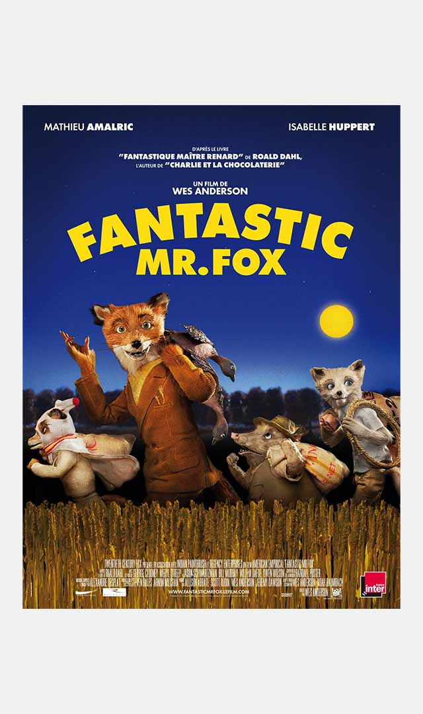
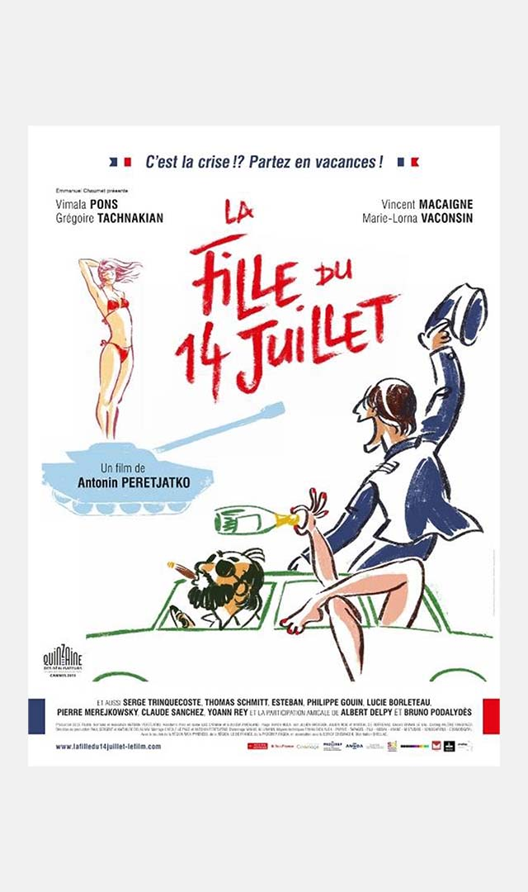
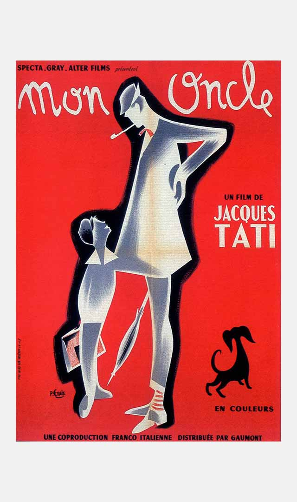
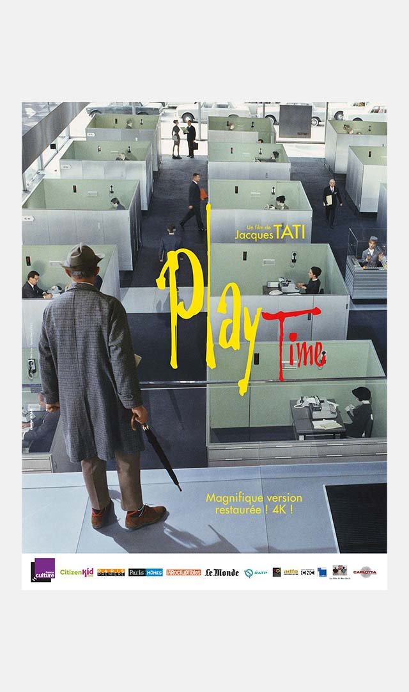
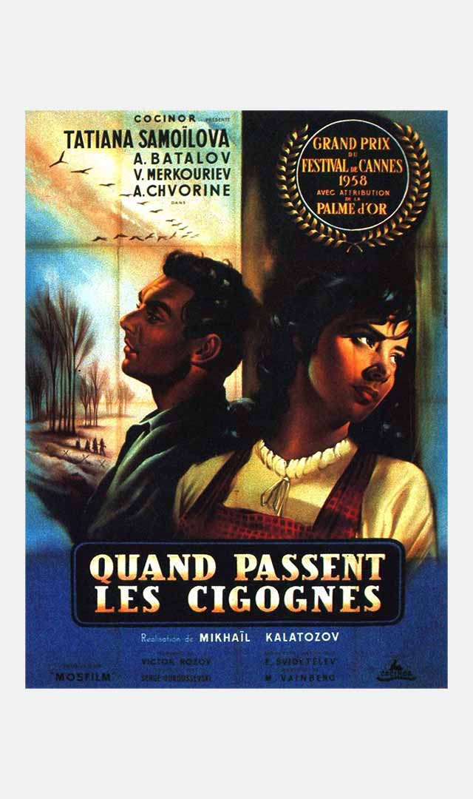
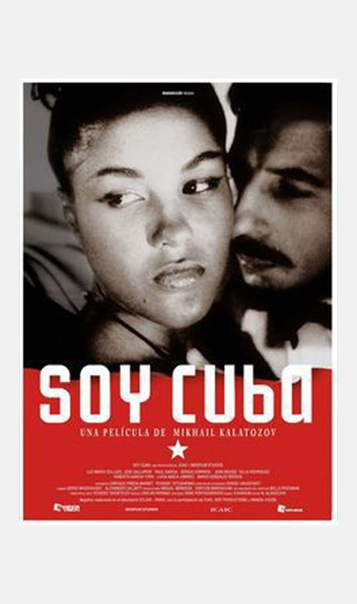
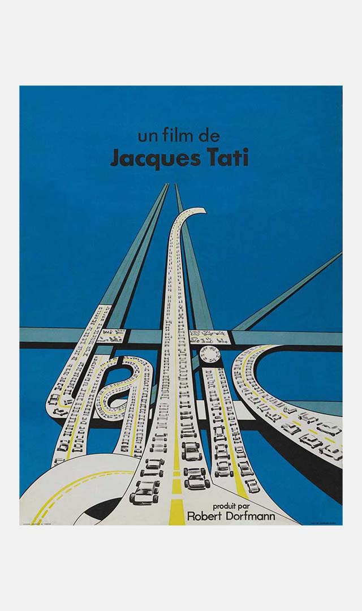
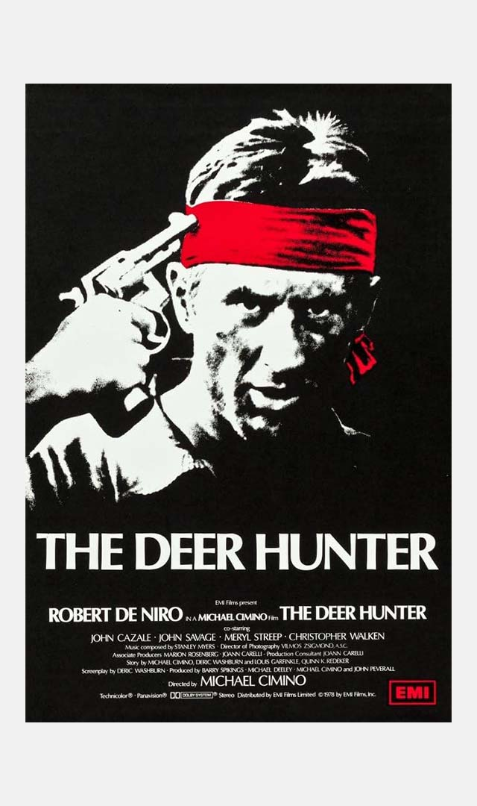

Références
Cette page rassemble mes œuvres préférées, servant de références dans mon travail.
Cette page évolue constamment.
Dernière mise à jour : 13 février 2024
Cinéma

Fantastic Mr. Fox
Wes Anderson, 2009.

La fille du 14 juillet
Antonin Peretjatko, 2013.

Mon oncle
Jacques Tati, 1958.

Playtime
Jacques Tati, 1967.

Quand passent les cigognes
Mikhaïl Kalatozov, 1957.

Soy Cuba
Mikhaïl Kalatozov, 1964.

Trafic
Jacques Tati, 1971.

Voyage au bout de l'enfer
Michael Cimino, 1978.
à propos


Site conçu par Amaury Hardré, 2024
références
musique
livre
peinture
jeu